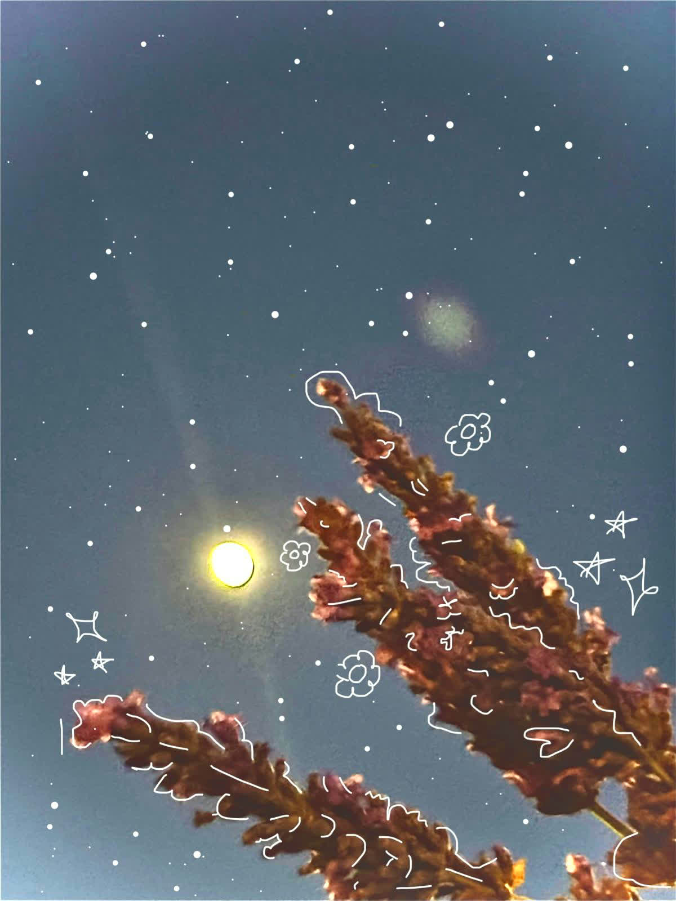
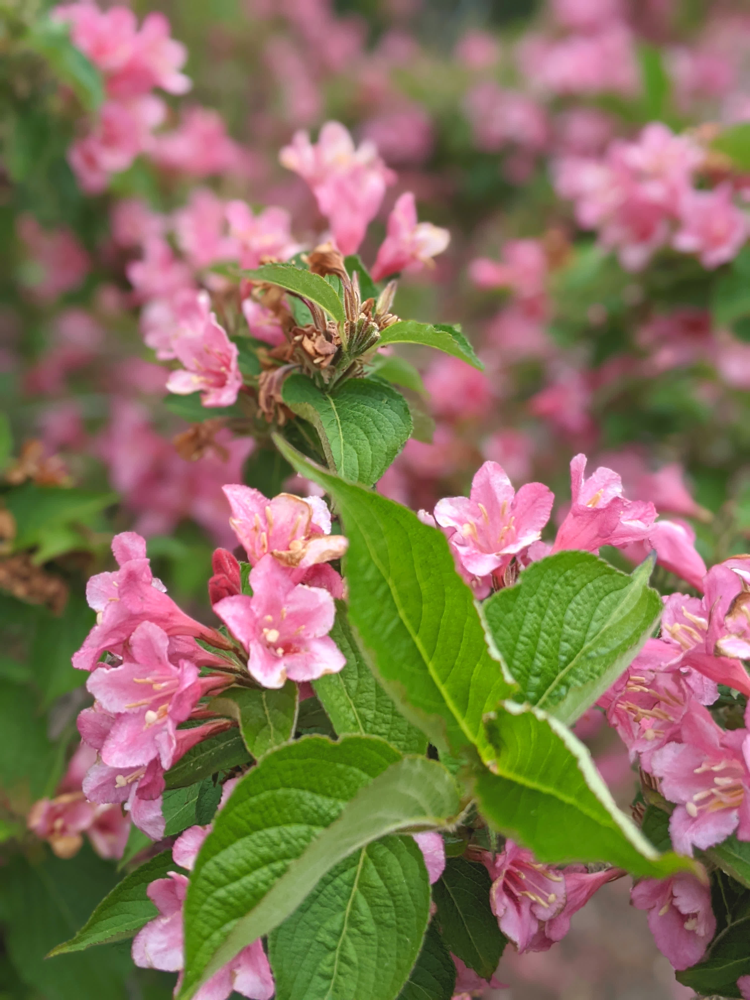
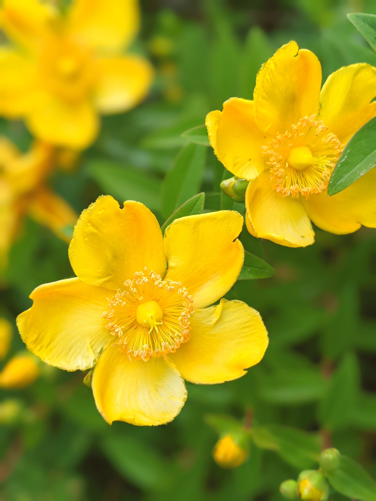
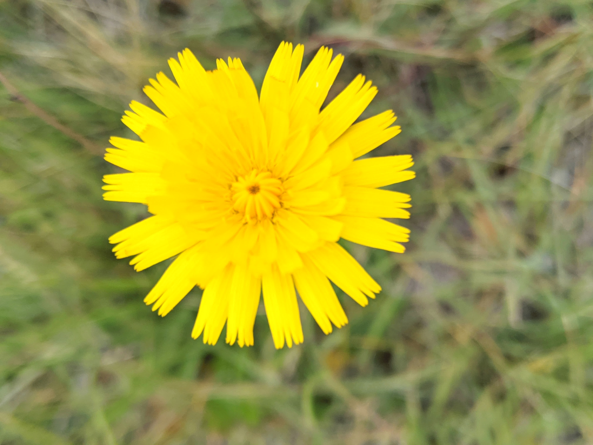

Digital art services with a spring palette.
InkAndAlgo now feels lighter, warmer, and more editorial. The studio combines generative visuals, soft botanicals, and story-driven interfaces for launches, campaigns, and gallery-style brand moments.
What Changed For Spring
The site now leans into airy layouts, softer color transitions, and portfolio language built around seasonal creative work.
Seasonal Brand Visuals
Short-run campaign art and landing-page visuals shaped around launches, product drops, and event calendars.
Botanical Motion Direction
Gentle movement, layered textures, and illustration systems that feel fresh instead of overproduced.
Editorial Web Layouts
Clean sections and calm typography for portfolios, studio pages, and creative service websites.
Interactive Showcases
Searchable collections and modal-based galleries that help featured pieces feel curated and premium.
Start Here
The main user journeys are now explicit on every page, so visitors can immediately move between services, portfolio, and contact without relearning the layout.
Planning a project
Start with the service menu, then jump straight to the contact section when you know what you need.
Reviewing the work
Browse the spring gallery first, then come back to services if you want a similar treatment for your own launch.
Understanding the studio
Read the positioning, check the process, and use the same common links in the header/footer to stay oriented.
Spring Service Menu
Seasonal Site Refresh
Refresh existing sites with a limited-time spring art direction, updated copy, and a cleaner promotional hierarchy.
- Palette and typography pass
- Homepage and gallery redesign
- Content updates for campaigns
Illustrated Launch Assets
Build a matching set of website visuals, hero imagery, and supporting artwork for a seasonal rollout.
- Signature artwork direction
- Web-safe image prep
- Consistent visual system handoff
Curated Portfolio Builds
Showcase selected work with a calmer layout, stronger category structure, and more useful filters.
- Collection planning
- Tagging and sorting strategy
- Responsive gallery implementation
Creative Direction Support
Shape the tone of a spring campaign across copy, UI, and artwork so the site reads as one cohesive release.
- Messaging alignment
- Visual references and moodboards
- Review and iteration cycles
Designed to feel like a seasonal opening night.
The new version of InkAndAlgo trades the heavier monochrome presentation for something brighter and more human. The layout now reads like a studio invitation, with enough structure for services and enough softness for artwork to lead.
The visual language pulls from paper textures, pale florals, greenhouse greens, and warm evening light. That gives the portfolio a spring identity without making the site feel temporary or novelty-driven.



How A Seasonal Refresh Ships
Theme Audit
Identify what feels dated, visually harsh, or off-season in the current presentation.
Palette Reset
Rebuild the color system around fresh neutrals, greens, petals, and warm sunlight accents.
Content Reframe
Update headings and service copy so the messaging matches the new atmosphere.
Gallery Polish
Make the portfolio easier to browse with filtering, search, and clearer detail views.
Need the site to feel ready for spring?
This refresh is built to showcase lighter campaigns, curated visuals, and a more welcoming studio presence.
Start A Project